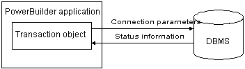

Communicating with the database
In order for a PowerBuilder application to display and manipulate data, the application must communicate with the database in which the data resides.
 To communicate with the database from your PowerBuilder
application:
To communicate with the database from your PowerBuilder
application:
Assign the appropriate values to the Transaction object.
Connect to the database.
Assign the Transaction object to the DataWindow control.
Perform the database processing.
Disconnect from the database.
For information about setting the Transaction object for a DataWindow control and using the DataWindow to retrieve and update data, see the DataWindow Programmer's Guide .
Default Transaction object
When you start executing an application, PowerBuilder creates a global default Transaction object named SQLCA (SQL Communications Area). You can use this default Transaction object in your application or define additional Transaction objects if your application has multiple database connections.
Transaction object properties
Each Transaction object has 15 properties, of which:
- Ten are used to connect to the database.
- Five are used to receive status information from the database about the success or failure of each database operation. (These error-checking properties all begin with SQL.)
Description of Transaction object properties
Table 12-1 describes each Transaction object property. For each of the ten connection properties, it also lists the equivalent field in the Database Profile Setup dialog box that you complete to create a database profile in the PowerBuilder development environment.
 Transaction object properties for your PowerBuilder
database interface For the Transaction object properties that
apply to your PowerBuilder database interface, see "Transaction object
properties and supported PowerBuilder database interfaces".
Transaction object properties for your PowerBuilder
database interface For the Transaction object properties that
apply to your PowerBuilder database interface, see "Transaction object
properties and supported PowerBuilder database interfaces".
| Property | Datatype | Description | In a database profile |
|---|---|---|---|
| DBMS | String | The DBMS identifier for your connection. For a complete list of the identifiers for the supported database interfaces, see the online Help. | DBMS |
| Database | String | The name of the database to which you are connecting. | Database Name |
| UserID | String | The name or ID of the user who connects to the database. | User ID |
| DBPass | String | The password used to connect to the database. | Password |
| Lock | String | For those DBMSs that support the use of lock values and isolation levels, the isolation level to use when you connect to the database. For information about the lock values you can set for your DBMS, see the description of the Lock DBParm parameter in the online Help. | Isolation Level |
| LogID | String | The name or ID of the user who logs in to the database server. | Login ID |
| LogPass | String | The password used to log in to the database server. | Login Password |
| ServerName | String | The name of the server on which the database resides. | Server Name |
| AutoCommit | Boolean | For those DBMSs that support it, specifies
whether PowerBuilder issues SQL statements
outside or inside the scope of a transaction. Values you can set
are:
For more information, see the AutoCommit description in the online Help. |
AutoCommit Mode |
| DBParm | String | Contains DBMS-specific connection parameters that support particular DBMS features. For a description of each DBParm parameter that PowerBuilder supports, see the chapter on setting additional connection parameters in Connecting to Your Database . | DBPARM |
| SQLReturnData | String | Contains DBMS-specific information. For example, after you connect to an Informix database and execute an embedded SQL INSERT statement, SQLReturnData contains the serial number of the inserted row. | — |
| SQLCode | Long | The success or failure code of the most recent SQL operation. For details, see "Error handling after a SQL statement". | — |
| SQLNRows | Long | The number of rows affected by the most recent SQL operation. The database vendor supplies this number, so the meaning may be different for each DBMS. | — |
| SQLDBCode | Long | The database vendor's error code. For details, see "Error handling after a SQL statement". | — |
| SQLErrText | String | The text of the database vendor's error message corresponding to the error code. For details, see "Error handling after a SQL statement". | — |
Transaction object properties and supported PowerBuilder database interfaces
The Transaction object properties required to connect to the database are different for each PowerBuilder database interface. Except for SQLReturnData, the properties that return status information about the success or failure of a SQL statement apply to all PowerBuilder database interfaces.
Table 12-2 lists each supported PowerBuilder database interface and the Transaction object properties you can use with that interface.
# UserID is optional for ODBC. (Be careful specifying the UserID property; it overrides the connection's UserName property returned by the ODBC SQLGetInfo call.)
+ PowerBuilder uses the LogID and LogPass properties only if your ODBC driver does not support the SQL driver CONNECT call.